Extended selections
Extended selections
With M!Table you can modify the appearance of selections and/or get a notification when the row/column selection has changed.
Furthermore, you can suppress row selection.
Functions
MTblSetSelectionColors
MTblGetSelectionColors
MTblSetSelectionDarkening
MTblGetSelectionDarkening
MTblGetColSelChanges
MTblGetRowSelChanges
MTblEnableExtMsgs
Messages
MTM_ColSelChanged
MTM_RowSelChanged
Table Flags
MTBL_FLAG_FULL_OVERLAP_SELECTION
MTBL_FLAG_SUPPRESS_ROW_SELECTION
Column Flags
MTBL_COL_FLAG_NOINVSEL_IMAGE
MTBL_COL_FLAG_NOINVSEL_TEXT
MTBL_COL_FLAG_NOINVSEL_BKGND
Row Flags
MTBL_ROW_NOSELINV_IMAGE
MTBL_ROW_NOSELINV_TEXT
MTBL_ROW_NOSELINV_BKGND
Cell Flags
MTBL_CELL_FLAG_NOINVSEL_IMAGE
MTBL_CELL_FLAG_NOINVSEL_TEXT
MTBL_CELL_FLAG_NOINVSEL_BKGND
Tree Flags
MTBL_TREE_FLAG_NOSELINV_NODES
MTBL_TREE_FLAG_NOSELINV_LINES
Hints and tips
Selection colors
Normally, selections are displayed by inverting the selected item, e.g. when a row is selected, the rectangle of the row is inverted.
If you use selection colors, the selected items are not inverted but drawn using the selection instead of the original colors:
|
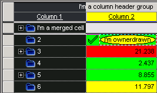 |
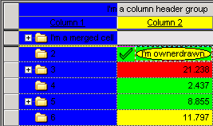 |
|
No selection colors defined. |
Only background selection color (blue) defined. |
|
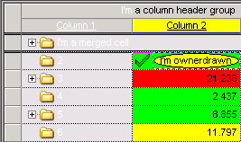 |
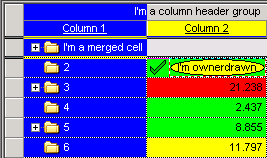 |
|
Only text selection color (white) defined. |
Background selection color (blue) and text selection color (white) defined. |
Selection darkening
The background, text and tree line colors are darkened by a certain amount.
The advantage compared to selection colors is that the original colors can still be recognized.
Selection darkening is also applied to defined selection colors.
|
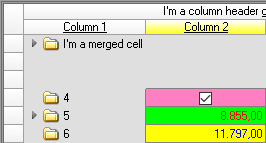 |
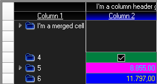 |
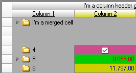 |
|
|
No selections. |
Columns selected, no selection darkening is defined. This is what we know. |
Columns selected, selection darkening 50 is defined. |
|
Full overlapping selections
If you set the table flag MTBL_FLAG_FULL_OVERLAP_SELECTION, the cells in the overlapping areas of row and column selection are also inverted or, if selection colors are used, drawn with the selection colors.
Let's see the difference:
|
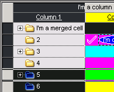 |
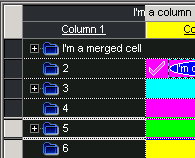 |
|
Flag not set, no selection colors. |
Flag set, no selection colors. |
|
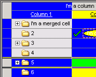 |
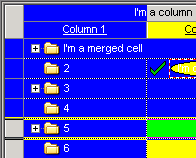 |
|
Flag not set, selection colors used. |
Flag set, selection colors used. |
The MTBL_*NOSELINV_* flags
With these flags you can avoid that particular items, e.g. images or texts, get inverted on selection, e.g when you set the column flag MTBL_COL_FLAG_NOINVSEL_IMAGE, the images of the column's selected cells aren't inverted:
|
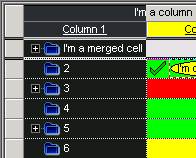 |
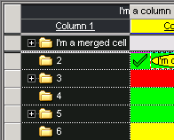 |
|
Flag not set |
Flag set |
When selection colors are used, these flags have no effect because selections are not inverted then.
The MTM_*Sel_Changed messages
These messages are sent only if the generation of extended messages was enabled with MTblEnableExtMsgs.
To get the changes, call one of the MTblGet*SelChanges functions, e.g. to get the column selection changes:
On MTM_ColSelChanged
Set nColsChanged = MTblGetColSelChanges( hWndForm, naRows, baChanges )
Please note that a selection change message is sent only when at least one item still exists. Let's say you have a table with some selected rows and call SalTblReset. M!Table doesn't send MTM_RowSelChanged because the rows don't exist anymore.
Created with the Personal Edition of HelpNDoc: Effortlessly Create High-Quality Documentation with a Help Authoring Tool